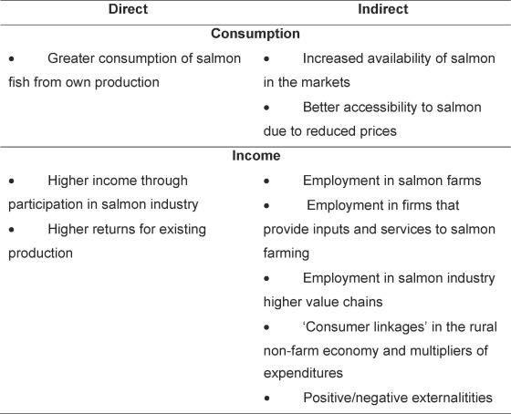

![]()
Important links
Media coverage
- “Los Lagos: Estudio afirma que salmonicultura redujo pobreza en áreas costeras remotas,” Salmonexpert, April 18, 2018
Abstract
We test if the establishment of salmon farms in remote coastal areas had a significant impact on poverty reduction in the period 1992–2002 in Los Lagos Region, Chile. We employ impact assessment techniques using as control group people residing in geographic areas where no salmon farms were established during the period studied. Poverty incidence is estimated using small-area models at the household level that combines socioeconomic surveys with census data. Our results show that poverty decreased considerably more in localities where salmon farms were installed than in localities without salmon farms. We identify the distances between localities and salmon farms where this impact was significant. Our findings contribute to the debate on the socioeconomic effects of aquaculture for capital-intensive, international market-oriented industries.
Important figures
Figure 2: The impact pathways of aquaculture on poverty reduction. Source: Modified from Toufique and Belton (2014). 
The study employed two control locality types. Control 1 consisted of rural localities without any salmon concessions before 2002, used to evaluate the impact of new farm installations. Control 2 involved localities with salmon concessions before and after 1992. This second control is established for the possibility that some localities of Control 1 are not good controls because some may have characteristics that do not permit the installation of salmon farms.
- WOAR: regressions without additional regresors
- WAR: regressions with additional regressors
- GEN: genetic matching
Figure 4 & 5: Estimated average treatment on the treated at different distances for different models (WOAR, WAR, GEN). Control 1 & Control 2, respectively. The shaded areas represent the 95% confidence interval. 
Citation
@article{ceballos_does_2018,
title = {Does the location of salmon farms contribute to the reduction of poverty in remote coastal areas? {An} impact assessment using a {Chilean} case study},
volume = {75},
issn = {0306-9192},
doi = {10.1016/j.foodpol.2018.01.009},
language = {English},
journal = {FOOD POLICY},
author = {Ceballos, Adams and David Dresdner-Cid, Jorge and Angel Quiroga-Suazo, Miguel},
month = feb,
year = {2018},
note = {Place: THE BOULEVARD, LANGFORD LANE, KIDLINGTON, OXFORD OX5 1GB, OXON, ENGLAND
Publisher: ELSEVIER SCI LTD
Type: Article},
keywords = {Aquaculture, Impact assessment, Poverty, Salmon, Small area estimation},
pages = {68--79},
}